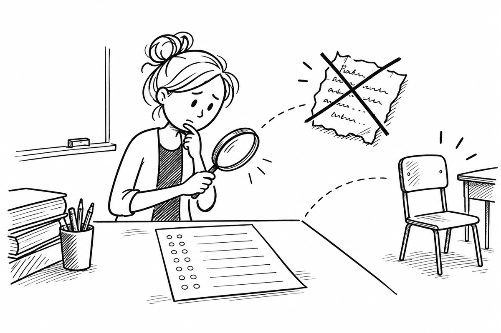

Wann „ungenügend“?
Leistung, Verweigerung und Täuschung auseinanderhalten.

Eine erbrachte Leistung ist „ungenügend“, wenn sie nach § 48 Abs. 3 Nr. 6 SchulG die Anforderungen nicht erfüllt und selbst die Grundkenntnisse so lückenhaft sind, dass die Mängel absehbar nicht behoben werden können.
Leistungsverweigerung wird nach § 48 Abs. 5 wie ungenügend bewertet. In der Oberstufe gilt dies nach § 13 Abs. 4 APO-GOSt auch, wenn Leistungen aus selbst zu vertretenden Gründen nicht beurteilbar sind. Ein leeres Blatt kann ein Indiz sein; der konkrete Sachverhalt ist zu klären.
Bei Täuschung sehen § 6 Abs. 7 APO-S I und § 13 Abs. 6 APO-GOSt abgestufte Folgen vor: Wiederholung, ungenügend für betroffene Teile oder bei umfangreicher Täuschung für die gesamte Leistung. Unentschuldigtes Fehlen ist nicht schon für sich eine Leistungsverweigerung; entscheidend ist, ob und aus welchem Grund eine geforderte Leistung fehlt oder nicht beurteilbar ist.
Seminarunterlagen: Zusammenfassung · Aufgabenfolien
Drei Fragen zu Beispielen
Klicke eine Karte an und vergleiche deinen Ansatz mit der Musterantwort.